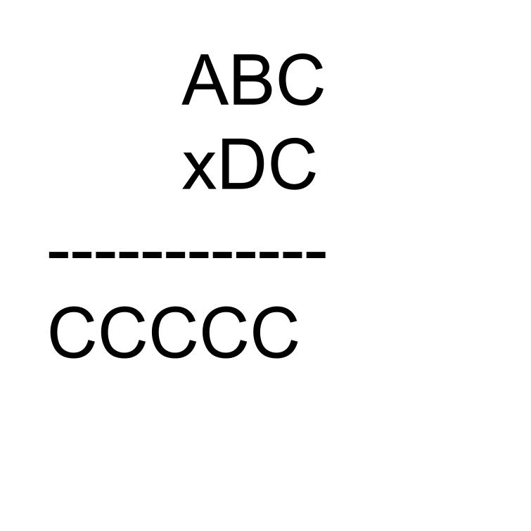

What year will it be in one million days from now?
M, N and O are the midpoints of BC, CD and AC. If the area of ABCD is 20cm2, what is the area of MCNO?
How many numbers from 0 to 20 can NOT be expressed as the difference of two squares? For example, 32 – 22 = 5, so 5 can be expressed as the difference of squares.
“?” is a rule that relates the numbers shown.
If 7 ? 5 = 15 , 9 ? 2 = 14 , 8 ? 9 = 20 and 2 ? 3 = 8
What is 5 ? 4 equal to?
What is the last digit of 188?
How many twin primes are there less than 100?
(twin primes are prime numbers which differ by 2)
Jenny bought some DVDs at $6 each. If each had cost a dollar less, she could have bought three more for the same cost. How many did she buy?
Fred the farmer built a square pen using 24 fence posts, evenly spaced. (this pen like all mathematical pens has no gate!). If each post was 1m apart, how many sheep (dimensions 0.5m by 1m) could fit in the pen?
In a questionnaire 43.75% of those asked answered ‘no’ to a certain question. What is the least number of people who were asked?
Andy had ½ kg of butter and used half of it. If each day he uses half of the butter remaining from the previous day, how many days will it take till he has less than a gram of butter?
If A=2, B=4, C=8, D=16, E=32, …
Which is the first letter to have a value of a million or more?
A cube is painted then cut up into 27 smaller cubes. How many of these are painted on just two sides?
Thirteen flags are evenly spaced from start to finish along a 100 metre track. An athlete running at constant speed gets to the seventh flag in 6 seconds. How long did it take altogether for her to reach the finish?
In a survey it was found that 77% drank coffee, 71% drank tea and 48% drank both. How many drank neither tea or coffee?
A circular water-lily doubles its area each day. After 12 days it has a diameter of 2m. When did it have a diameter of 50cm?
My old Grandmother’s age is a perfect square and equals the difference between the square of my mother’s age and the square of my father’s age. How old is she?
What are the next three terms in this sequence?
2, 3, 2, 3, 5, 7, 5, 7, 11, 13, 11, 13, …
Ben thinks of a number, doubles it, adds 10, halves the result and takes away the number he first thought of. What is his answer if it is the same number he started with?
In how many ways can you arrange the letters of the word GROUP?
Find values for A, B, C and D if the following is true:
